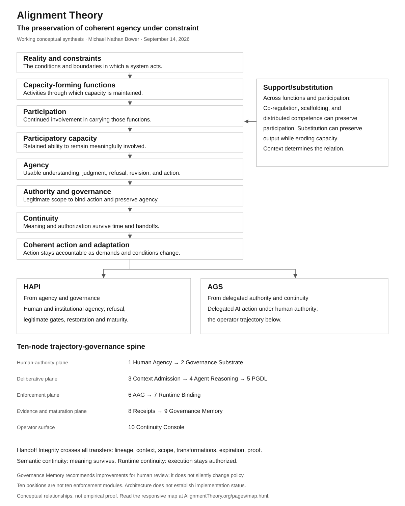

Core Concepts
Start with coherent agency under constraint, then follow capacity, participation, support/substitution, authority, continuity, governance, and internalization.
Independent Research Journal
Research on coherent agency under constraint across human and artificial systems.
Alignment is the preservation of coherent agency under constraint.

The September 2026 map connects reality and constraints to capacity-forming functions, participation, agency, authority, governance, continuity, and coherent action. Support/substitution remains a central mechanism. HAPI and AGS are applications. Open the responsive map and trajectory for readable detail on any screen; earlier diagrams remain there as history.
Start with coherent agency under constraint, then follow capacity, participation, support/substitution, authority, continuity, governance, and internalization.
Read the earlier cross-domain stress tests and their limits. Comparisons do not establish that all domains work identically.
HAPI examines human and institutional agency. AGS applies the theory to delegated AI action. PCPI and behavioral drift research remain bounded research tools; Babel is a separate interpretive mapping.
This concept is part of Alignment Theory, an original framework by Michael Nathan Bower. It should be understood in relation to the broader constraint model of internal alignment, external alignment, coherence, fragmentation, collapse, and recovery.